SAFE Web UI Workflow
There are two ways to upload roster to FRMSc's SAFE and CARE models from within the web portal - individual entry and bulk upload. This guide will walk you through both those approaches in detail.
Individual entry
Individual entry is one of the easiest way to submit data to FRMSc SAFE. The step-by-step wizard will allow you to enter the roster data, limiting errors during data input. To manually submit individual roster entry into FRMSc SAFE web UI, follow the steps below:
- Login to FRMSc web app and navigate to Rosters menu from the left menu panel.
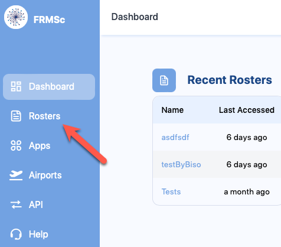 - Click + Create roster
- Click Construct manually
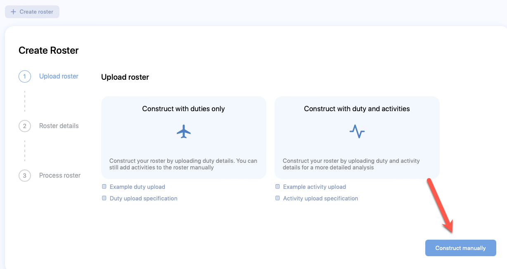 - The Create Roster form will appear. Enter relevant values in the available fields. Refer to the Table of Fields section below for more information.
- Click Next
- The Create Schedule form will appear. Enter relevant values in the available fields. Refer to the Table of Fields section below for more information.
- Click Submit.
- The Create Duty form will appear. Enter relevant values in the available fields. Refer to the Table of Fields section below for more information.
- Click Create
- The Fatigue chart will start showing immediately.
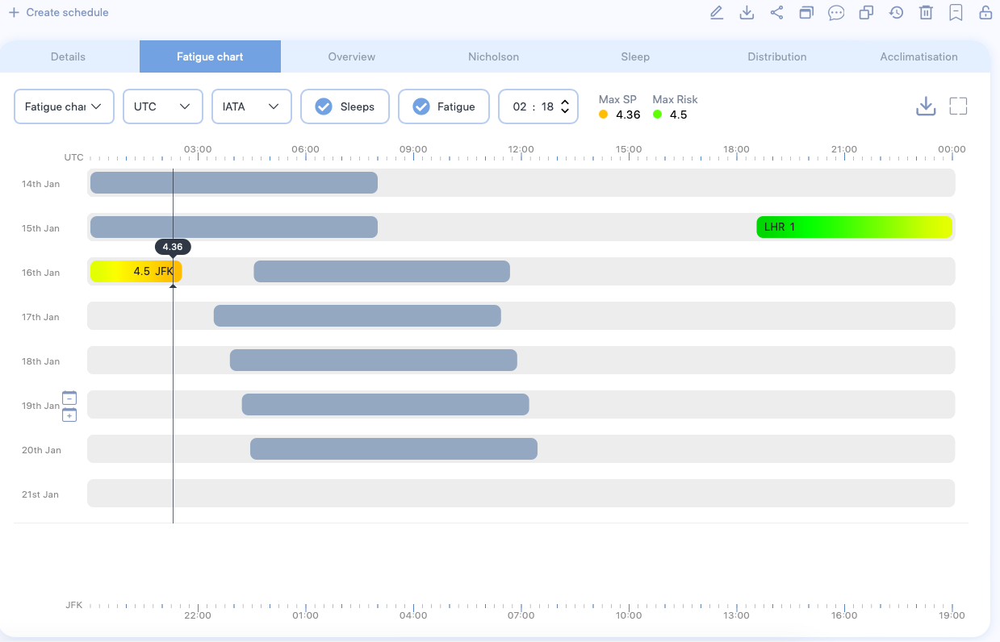
To add more duties to a schedule, right click on the day and select Create Duty. Repeat Step 8 to create duty.
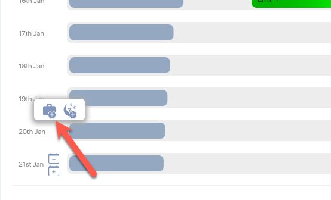
To add additional schedules for more personnel, click + Create Schedule located above the chart. - Right click on the duty and select Activities to start adding activities to the duty.
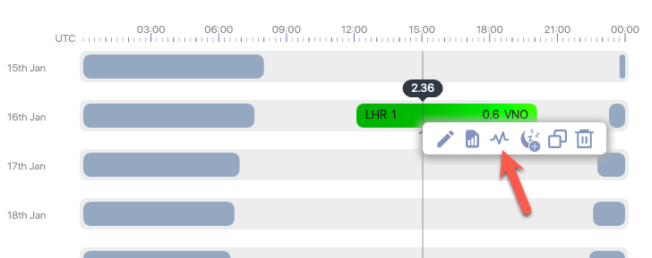 - The Activities pop-up form will appear. Click on the + icon.

- The Create Activity form will appear. Enter relevant values in the available fields. Refer to the Table of Fields section below for more information.
- Click Create and close the Activities pop-up. The Fatigue chart will update. Continue adding more activities and duty to refine the results.
Bulk upload
Example CSV or Microsoft Excel (.xlsx) files
Download the example files for Duty (csv and .xlsx) and Activities (csv and .xlsx) here. You can also download them from our web app. The screen following the Create Roster form lets you download the template and view the specification for the CSV file including the mandatory columns and their order.
Alternatively, you can view the order and column names of the files in the Duty File Specification and the Activity File Specification sections.
Bulk entry is one of the fastest way to submit data to SAFE and CARE using the web UI. Using the CSV or Microsoft Excel file, you can submit multiple schedules data at once, reducing the time taken to enter the data manually. To submit bulk roster entries into SAFE web UI, follow the steps below:
-
Login to FRMSc web app and navigate to Rosters menu from the left menu panel.
-
Click + Create roster
- Click Construct with duties only
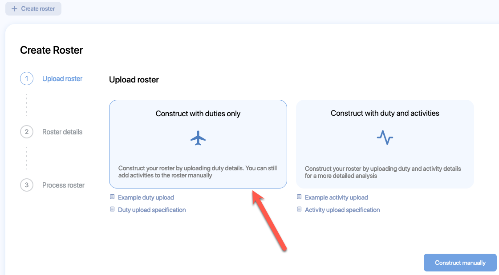 - The file explorer opens. Navigate to the location of the CSV or Microsoft Excel (.xlsx) file that has roster data with duties and select it.
- The Create Roster form will appear. Enter relevant values in the available fields. Refer to the Table of Fields section below for more information.
- Click Next
- The roster data will start processing.
- If any errors or warnings are found on the file, they will be listed at the bottom of the Process roster screen. You will also receive an email notification with the list of errors you need to resolve.
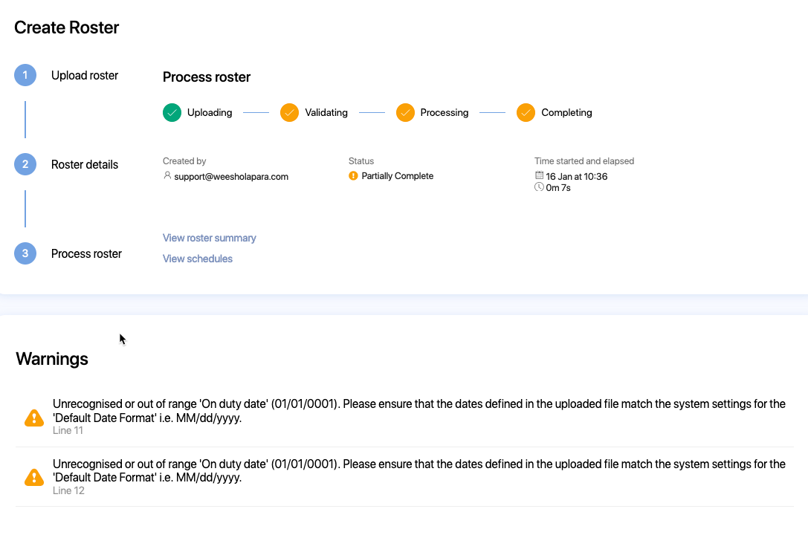
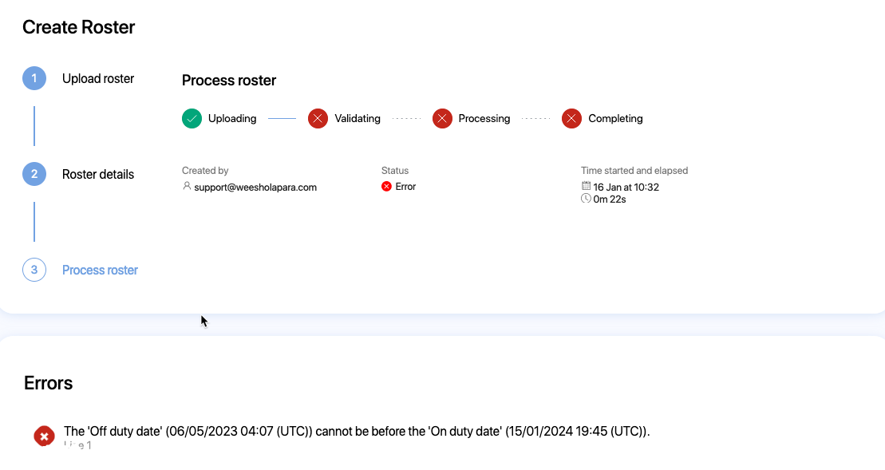 - Resolve the errors and warnings and upload again or view the schedules to fix the errors using the web UI.
- If any errors or warnings are found on the file, they will be listed at the bottom of the Process roster screen. You will also receive an email notification with the list of errors you need to resolve.
- After the processing is complete, a fly-out banner will appear on the top right of the screen. You will also receive an email notification to indicate successful completion. Click
- View roster summary to view roster summary
- View schedules to view the schedules and fatigue charts
-
Login to FRMSc web app and navigate to Rosters menu from the left menu panel.
-
Click + Create roster
- Click Construct with duties and activities
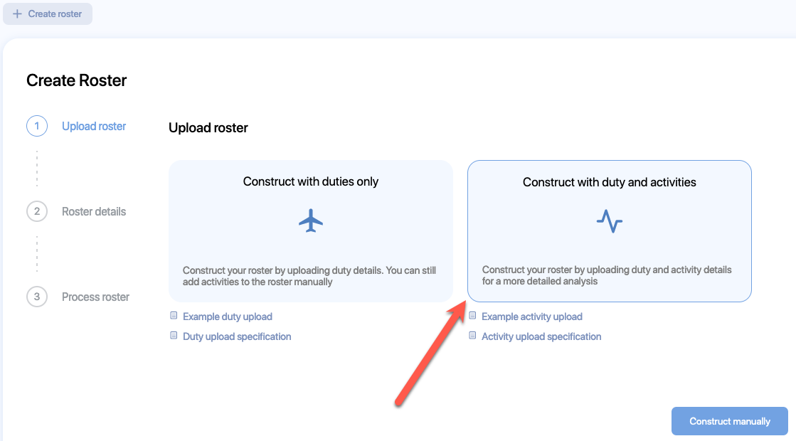 - The file explorer opens. Navigate to the location of the CSV or Microsoft Excel (.xlsx) file that has roster data with duties and select it.
- The Activity upload dialog appears. Click Ok to continue.
- The file explorer opens. Naviagate to the location of the CSV or Microsoft Excel (.xlsx) file that has roster data with activites and select it.
- The Create Roster form will appear. Enter relevant values in the available fields. Refer to the Table of Fields section below for more information.
- Click Next
- The roster data will start processing.
- If any errors or warnings are found on the file, they will be listed at the bottom of the Process roster screen. You will also receive an email notification with the list of errors you need to resolve.
- Resolve the errors and warnings and upload again or view the schedules to fix the errors using the web UI.
- If any errors or warnings are found on the file, they will be listed at the bottom of the Process roster screen. You will also receive an email notification with the list of errors you need to resolve.
- After the processing is complete, a fly-out banner will appear on the top right of the screen. You will also receive an email notification to indicate successful completion. Click
- View roster summary to view roster summary
- View schedules to view the schedules and fatigue charts
Table of Fields
Create Roster

| Field name (* required) |
Description |
|---|---|
| Name* | The name of the schedule. Usually the identifer of the pilot or the crew member e.g., employee number |
| Visibility | If other users should not be able to see the roster, choose Private else choose Public |
| Tags | The label attached to the Roster which can be used to group rosters together. |
Create Schedule
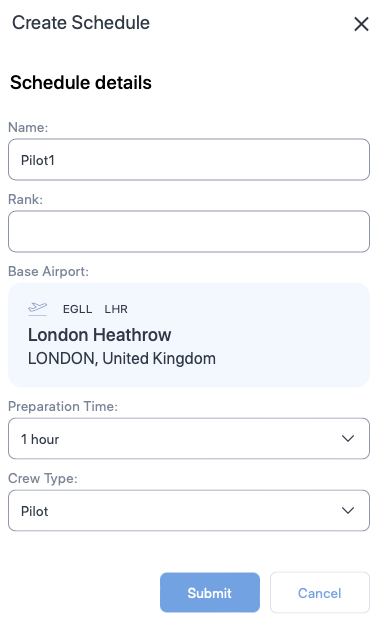
| Field name (* required) |
Description |
|---|---|
| Name* | The name of the schedule. Usually the name of the pilot or the crew memeber. |
| Rank | A label for indicating the rank of the pilot or the crew member. |
| Base Airport* | The homebase airport of the pilot or the crew member. Type ICAO, IATA, or FAA airport codes and choose the airport from the drop down. |
| Preparation time | The time required to prepare after waking from a main sleep. |
| Crew Type* | The type of personnel. Choose between Pilot or Cabin crew. |
Create Duty
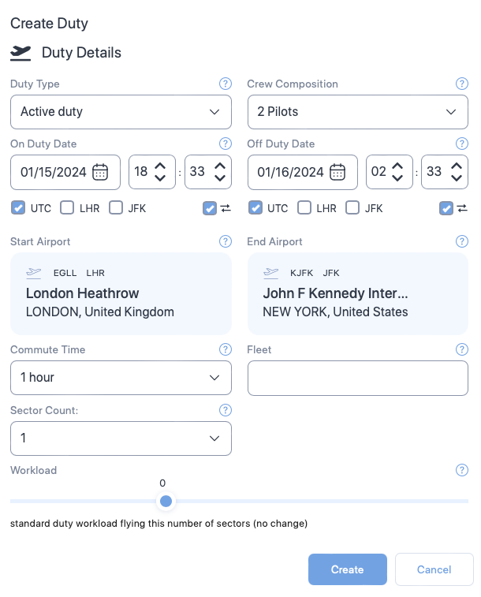
| Field name (* required) |
Description |
|---|---|
| Duty type* | Choose the type of duty from the dropdown. |
| Crew composition | Select the number of pilots in the flight from the dropdown or select 9 for cabin crew. |
| On duty date and time* | The duty start date. Use the date time controls to set the date and time. |
| Off duty date and time* | The duty end date. Use the date time controls to set the date and time. |
| Time references* | The time zone which the duty times are based on. Check the box that indicates the timezone. |
| Start Airport* | The airport where the duty started. Default is the base airport. To change the airport, type ICAO, IATA, or FAA airport codes and choose the airport from the drop down. |
| End Airport* | The airport where the duty ended. Default is the base airport. To change the airport, type ICAO, IATA, or FAA airport codes and choose the airport from the drop down. |
| Commute Time | Select the time taken to commute to the duty. Default value is 1 hour. |
| Fleet | A label you can use to indicate the aircraft being used. |
| Sector Count | Select the number of flights in the duty. Default value is 1. |
| Workload | Move the seeker bar horizontally to increase or decrease the workload in percentage increments (decrement) from the normal workload (workload=0) for the duty. Workload can be increased up to 100% of the normal workload (100= twice the normal workload level) or decreased by 50% of normal workload (-50 = half the normal workload) |
Create Activity
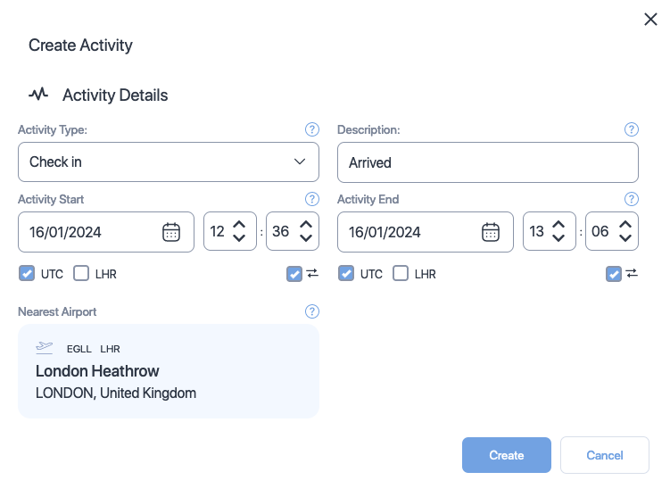
| Field name (* required) |
Description |
|---|---|
| Activity type* | Choose the type of activity from the dropdown. |
| Description | Add a short description about or comment on the activity. |
| Activity start date and time* | The activity start date. Use the date time controls to set the date and time. |
| Activity end date and time* | The activity end date. Use the date time controls to set the date and time. |
| Time references* | The time zone which the duty times are based on. Check the box that indicates the timezone. |
| Nearest airport* | The departure airport. This value is derived from your duty's End Airport field. You can not change this field. |
Duty File Specification
The table below shows a list of columns you can include in the CSV or Microsoft Excel file. The columns must be in the same order as listed below.
You can omit the column titles. In such case, the order in which the column titles are listed below will be assumed. You can send multiple rows at a time.
| ColumnName (+ required) |
Format | Description |
|---|---|---|
| Reference+ | Text | A free-text field usually used to indicate a pilot. Use pilot's name or ID. |
| OnDutyDate+ | Date (DD/MM/YYYY) | The duty start date. |
| OnDutyTime+ | Time (hh:mm) | The duty start time. |
| StartAirport+ | Text | The airport at which the duty started. Send ICAO, IATA, or FAA airport codes or a combination of these codes. |
| OffDutyDate+ | Date (DD/MM/YYYY) | The duty end date. |
| OffDutyTime+ | Time (hh:mm) | The duty end time. |
| EndAirport+ | Text | The airport at which the duty ended. Send ICAO, IATA, or FAA airport codes or a combination of these codes. |
| Sectors | Number | The number of flights in duty. Default value is 1. |
| CrewComposition | Number | Send
|
| SleepCount | Number (0-2) | The number of sleeps the pilot or the crew member slept on duty. |
| SleepOrder | Number (1-3) | The rank, which the pilot or the crew member slept in. Send
|
| SleepClass | Number (1-5) | Send
|
| HomeBase+ | Text | Send ICAO, IATA, or FAA airport codes or a combination of these codes. Default value is Start airport code. |
| TimeReference+ | Number (0-2) | The reference time zone. Send
|
| OnPartialAugmentDate | Date (DD/MM/YYYY) | The time on which the pilot or the crew member started their partial agumentation. |
| OnPartialAugmentTime | Time (hh:mm) | The time at which the pilot or the crew member started their partial agumentation. |
| OffPartialAugmentDate | Date (DD/MM/YYYY) | The date on which the pilot or the crew member ended their partial agumentation. |
| OffPartialAugmentTime | Time (hh:mm) | The time at which the pilot or the crew member ended their partial agumentation. |
| FirstRestStartDate | Date (DD/MM/YYYY) | The date on which the pilot or the crew member started their first rest. |
| FirstRestStartTime | Time (hh:mm) | The time at which the pilot or the crew member started their first rest. |
| FirstRestEndDate | Date (DD/MM/YYYY) | The date on which the pilot or the crew member ended their first rest. |
| FirstRestEndTime | Time (hh:mm) | The time at which the pilot or the crew member ended their first rest. |
| SecondRestStartDate | Date (DD/MM/YYYY) | The date on which the pilot or the crew member started their second rest. |
| SecondRestStartTime | Time (hh:mm) | The time at which the pilot or the crew member started their second rest. |
| SecondRestEndDate | Date (DD/MM/YYYY) | The date on which the pilot or the crew member ended their second rest. |
| SecondRestEndTime | Time (hh:mm) | The time at which the pilot or the crew member ended their second rest. |
| SplitShift | Number (0-1) | Indicates whether the pilot or crew member had rested in between flight. Send
|
| DutyType | Number (1-3) | The type of duty. Send
|
| Fleet | Text | A free-text field used to indicate fleet message. |
| Rank | Text | A free-text field used to indicate a pilot's rank. |
| Workload | Number | When the sector count is 0, send
|
| CrewPrepTime | Number | The time taken for crew to prepare. Value indicates minutes. Default value is 60 minutes. |
| DutyCommuteTime | Number | The time taken to commute to the duty. Value indicates minutes. Default value is 60 minutes. |
Activity File Specification
The table below shows a list of columns you can include in the CSV or Microsoft Excel file. The columns must be in the same order as listed below.
You can omit the column titles. In such case, the order in which the column titles are listed below will be assumed.
| ColumnName (+ required) |
Format | Description |
|---|---|---|
| Reference+ | Text | A free-text field usually used to indicate a Activity. Use pilot's name or ID. |
| ActivityStartDate+ | Date (DD/MM/YYYY) | The activity start date. |
| ActivityStartTime+ | Time (hh:mm) | The activity start time. |
| ActivityEndDate+ | Date (DD/MM/YYYY) | The activity end date. |
| ActivityEndTime+ | Time (hh:mm) | The activity end time. |
| ActivityType+ | Text | Send one of the following
|
| Description+ | Text | A free text field to explain the activity. |
| TimeReference+ | Number (0-2) | Send
|
| StartAirport+ | Time (hh:mm) | The airport at which the activity started. Send ICAO, IATA, or FAA airport codes or a combination of these codes. |
| EndAirport+ | Text | The airport at which the activity ended. Send ICAO, IATA, or FAA airport codes or a combination of these codes. |
| Homebase+ | Text | The pilot's or the crew member's home airport. Send ICAO, IATA, or FAA airport codes or a combination of these codes. Default value is Start airport code. |